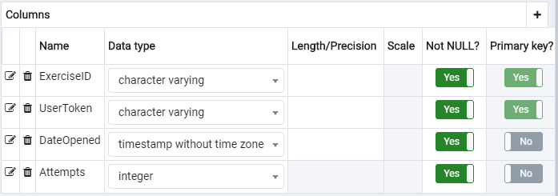
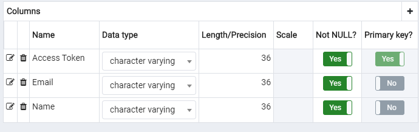

Să se creeze o platformă Web ce ajută cu exersarea cunoștințelor de HTML și CSS. După autentificarea cu o rețea socială
la alegere (GitHub, Facebook, Twitter, etc), aplicația va pune la dispoziția utilizatorilor, printr-o interfață atractivă,
nivele cu diverse provocări, unde aceștia vor trebui să scrie cod pentru a trece mai departe.
Aplicația va salva progresul fiecărui utilizator, acesta putând continua de unde a rămas, mai târziu. În plus,
aceasta va oferi statistici, referitoare la clasamentele globale cât și pentru fiecare utilizator în parte.
De asemenea, platforma va expune și un API REST/GraphQL prin care alte aplicații vor putea prelua în format
JSON sau XML atât provocarile, cât și răspunsurile corecte.
Introducere
Pentru ca interfața să fie cât mai atractivă și aplicația cât mai interesantă, am ales ca tema acesteia să fie Mario,
iar fiecare tip de nivel (HTML sau CSS) să se contureze ca o poveste a unui protagonist: Luigi care își dorește să își
schimbe cariera și să devină Web Developer și Mario, care pornește într-o aventură spre castelul Prințesei Peach,
întâlnind o serie de obstacole pe care jucătorii vor trebui să le depășească cu ajutorul unor proprietăți CSS. Nivelele
sunt originale, destinate începătorilor, iar pentru a le veni în ajutor majoritatea nivelelor oferă un link către documentația
MDN relevantă.
Arhitectura aplicației
Din punct de vedere arhitectural, am recurs la MVC adaptat la utilizarea unui API. Astfel, o parte din conținutul din View este
adăugat dinamic din JavaScript, care folosește Ajax pentru a cere datele necesare de la API. Modelele oferă o serie de
funcții pentru acces direct la baza de date, fiind folosite de către funcțiile din API pentru executarea operațiilor cerute.
Controllerele sunt folosite conform modelului MVC tradițional, pentru randarea view-urilor.
Rutarea
Rutarea este implementată în app/core/App.php, unde este parsat URL-ul și pe baza lui este stabilit controllerul, metoda
din controller care se va apela și argumentele cu care se va apela această metodă. În cazul în care controllerul stabilit
din URL nu există, utilizatorul va fi redirecționat către pagina 404.
În App.php se verifică și dacă utilizatorul este conectat. Dacă acesta nu este conectat și încearcă să acceseze o pagină
ce necesită acest lucru, controllerul va deveni login, iar metoda va deveni index, realizându-se astfel o redirecționare
către pagina de login.
Configurarea aplicației
Pentru configurarea aplicației, folosim o serie de variabile de mediu ce conțin datele confidențiale despre aplicație,
cum ar fi credențialele pentru baza de date și client secret-ul de la Github. De asemenea, folosim variabile de mediu și
pentru stocarea căilor către resurse: imagini, CSS și JavaScript, astfel încât dacă intervin modificări asupra acestora să
modificăm adresele într-un singur loc.
Pentru lucrul local, variabilele de mediu sunt setate în fișierul app/config.php, care este adăugat în .gitignore și
nu este încărcat pe Github, protejând astfel confidențialitatea informațiilor. În mediul de deploy, aceste variabile
de mediu sunt setate din setările proiectului pe Heroku.
Conectare cu rețelele sociale
Pentru conectarea pe site, este necesar un cont de Github, iar utilizatorul trebuie să își dea permisiunea ca aplicația să îi
folosească datele publice din acest cont (username-ul și avatarul). La click pe butonul Sign in with Github de pe pagina de login,
acesta va fi redirecționat către pagina de Github unde își poate oferi permisiunea. Dacă refuză, va fi redirecționat din nou
spre pagina de login. Dacă acceptă, va fi redirecționat către /githubconnect, controllerul unde se găsește logica pentru
obținerea datelor despre utilizator folosind codul transmis de către Github ca query parameter. Odată obținut acest cod,
am folosit curl pentru a face un POST la https://github.com/login/oauth/access_token cu datele necesare și am primit înapoi
un access token, pe care l-am folosit apoi pentru a face un GET la https://api.github.com/user, unde sunt returnate
datele publice ale utilizatorului. Cu ajutorul modelului User, se verifică în baza de date dacă username-ul există deja,
iar în caz contrar se creează o intrare nouă pentru acesta. După aceea, este setat în $_SESSION access token-ul corespunzător,
iar utilizatorule este redirecționat către exerciții. De menționat că acest proces este executat instant, iar utilizatorul
nu observă pagina intermediară. Permisiunea este cerută doar prima oară când utilizatorul încearcă să se înregistreze.
Pentru stocarea de date am folosit o bază de date PostgreSQL găzduită pe Heroku, același mediu în care am făcut
deploy. Acest lucru a simplificat mult și lucrul local la proiect, nefiind nevoie ca ambii membrii ai echipei să
introducă manual datele. În continuare vom prezenta structura tabelelor din această bază de date.
Tabelul Users
Fig.1 - Structura tabelului Users
Acest tabel conține datele despre utilizatorii aplicației. La click pe butonul Sign in with Github de pe pagina
de login, dacă utilizatorul își dă permisiunea sunt preluate informațiile sale publice: username-ul și avatarul.
Dacă username-ul respectiv nu a fost introdus deja în tabelul Users, va fi creat un utilizator nou. Câmpurile html_level
și css_level vor fi inițializate cu valoarea 1, speed_score și correctness_score cu 0, iar Access Token va fi generat
automat cu ajutorul funcției PHP uniqid().
Tabelul Exercises
Fig.1 - Structura tabelului Exercises
Acest tabel conține date despre exercițiile aplicației. Câmpul ExtraHTML este folosit la exercițiile de CSS, pentru
ca utilizatorul să se poată concentra doar pe CSS-ul exercițiului, fără a fi necesar ca acesta să vizualizeze și HTML-ul
corespunzător. Câmpul Attempts reține statistici globale despre fiecare exercițiu în parte, fiind incrementat de fiecare
dată când un utilizator dă submit la un exercițiu.
Tabelul ExerciseAttempts

Fig.1 - Structura tabelului ExerciseAttempts
Acest tabel conține date despre încercările fiecărui utilizator de a rezolva fiecare exercițiu.
Este inserată o intrare nouă atunci când utilizatorul deblochează un exercițiu. Când un utilizator dă submit la
un exercițiu (este apelată metoda POST pe /api/exercises), este incrementat câmpul Attempts al intrării corespunzătoare.
Faptul că ExerciseID și UserToken formează cheia primară a tabelului asigură unicitatea combinației.
Tabelul Applications

Fig.1 - Structura tabelului Applications
Acest tabel conține toate aplicațiile externe înregistrate, acestea având acces prin API la toate informațiile despre
exerciții, inclusiv soluții.
Securitate
Pentru a preveni SQL Injections, toate operațiile pe baza de date folosesc Prepared Statements.
REST API
Aplicația se folosește de un API REST, ce oferă avantajul unei experiențe mai bune pentru utilizator, nefiind necesar
refresh-ul paginii la trecerea de la un nivel la altul. De asemenea, aplicația poate fi utilizată direct din Postman
sau alte programe asemănătoare, utilizatorul având acces din pagina sa de profil la un access token care se adaugă
în header-ul unui request, la Authorization, ca Bearer token.
Pentru utilizarea aplicației de către aplicații externe, acestea trebuie să se înregistreze pe pagina de login, cu
click pe link-ul Are you a developer?. Acestea vor primi un access token pe care îl pot folosi pentru preluarea
datelor despre exerciții. Spre deosebire de utilizatorii obișnuiți, aplicațiile au dreptul să utilizeze doar ruta
/exercises, dar pot obține prin aceasta și soluțiile exercițiilor, la care ceilalți utilizatori nu au acces.
Pentru a diferenția aceste 2 tipuri de utilizatori, am generat diferit access tokenii, pentru aplicații fiind creat
cu funcția random_bytes și având o lungime mai mare, iar pentru utilizatori obișnuiți fiind generat cu funcția PHP
uniqid().
Pentru a vedea documentația în Swagger a aplicației, click aici.
Detalii de implementare
Orice accesare a rutei /api este gestionată în app/rest/rest-service.php, care se folosește de o serie de configurări
pentru rutele /api/exercises, /api/users și /api/applications, identifică configurarea care se potrivește cu URL-ul (dacă
nu o găsește, utilizatorul va fi redirecționat către o pagină cu eroarea 404) și apelează metoda care îi corespunde, dacă sunt
îndeplinite o serie de condiții. Aceste condiții sunt verificate prin middlewares, implementați cu ajutorul metodei:
function checkMiddlewares($routeConfig, $params, $query, $payload) {
if (isset($routeConfig['middlewares'])) {
foreach($routeConfig['middlewares'] as $middlewareName) {
$didPass = call_user_func($middlewareName, [
"params" => $params,
"query" => $query,
"payload" => $payload
]);
if (!$didPass)
exit();
}
}
Un exemplu de configurări pentru rute (extras din app/rest/exercise-routes.php):
Pentru administrarea aplicației se folosește un fișier de config, numit admin.php. Variabilele de configurare disponibile
sunt:
exerciseStatistics(true/false) - când este setat cu valoarea true, în zona de cod dedicată exercițiilor va fi
afișat și numărul total de încercări pentru acel exercițiu (același pentru toți utilizatorii)
leaderboardType("speed", "correctness", "both") - setează metrica care ar trebui să apară pe
pe pagina leaderboard.
applicationLogin(true, false) - activează sau dezactivează posibilitatea aplicațiilor externe
de a folosi site-ul.
userAvatars("github", api) - stabilește sursa avatarelor pentru utilizatorii noi. La selectarea
opțiunii api, avatarele vor fi generate cu ajutorul Adorable Avatars pe
baza username-ului de Github al utilizatorului.
userAccessTokens(true, false) - activează sau dezactivează afișarea access token-ului utilizatorului
pe pagina sa de profil.
Version control și deployment
Ca sistem de version control, am folosit Github.
Atât baza de date, cât și site-ul sunt găzduite pe Heroku. Site-ul poate fi accesat aici
Ca metodă de deploy, am folosit deploy automat de pe branch-ul master de pe Github. Noi am lucrat pe alt branch (fie branch-ul local fie
un branch separat), iar la adăugarea unui feature nou făceam pull request și merge pe master.


Conectare cu rețelele sociale
Pentru conectarea pe site, este necesar un cont de Github, iar utilizatorul trebuie să își dea permisiunea ca aplicația să îi folosească datele publice din acest cont (username-ul și avatarul). La click pe butonul Sign in with Github de pe pagina de login, acesta va fi redirecționat către pagina de Github unde își poate oferi permisiunea. Dacă refuză, va fi redirecționat din nou spre pagina de login. Dacă acceptă, va fi redirecționat către /githubconnect, controllerul unde se găsește logica pentru obținerea datelor despre utilizator folosind codul transmis de către Github ca query parameter. Odată obținut acest cod, am folosit curl pentru a face un POST la https://github.com/login/oauth/access_token cu datele necesare și am primit înapoi un access token, pe care l-am folosit apoi pentru a face un GET la https://api.github.com/user, unde sunt returnate datele publice ale utilizatorului. Cu ajutorul modelului User, se verifică în baza de date dacă username-ul există deja, iar în caz contrar se creează o intrare nouă pentru acesta. După aceea, este setat în $_SESSION access token-ul corespunzător, iar utilizatorule este redirecționat către exerciții. De menționat că acest proces este executat instant, iar utilizatorul nu observă pagina intermediară. Permisiunea este cerută doar prima oară când utilizatorul încearcă să se înregistreze.
Codul pentru înregistrarea unui utilizator este:
public static function registerUser($username, $avatar) { $connection = $GLOBALS['DB_CON']; if ($GLOBALS["userAvatars"] == "api") $avatar = "https://api.adorable.io/avatars/285/" . $username . ".png"; $data = array("Username" => $username, "Avatar" => $avatar, "Access Token" => uniqid()); $res = pg_insert($connection, 'Users', $data); if ($res) return $data['Access Token']; return null; }Conectarea cu Github a fost făcută conform documentației oficiale.